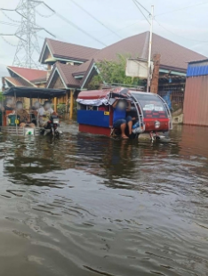
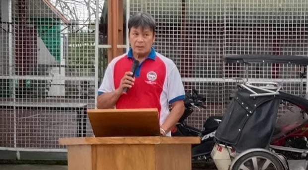

ANGELITO CASTRO
Sa Batasan, madalas maranasan ang pinakamataas na baha. Kaya’t tuwing dumarating ang malalakas na bagyo, laging kinakailangan ng barangay ang pinakamaraming volunteers na maaring tumulong. Naranasan kong masiraan ng motorsiklo nang halos umabot ang tubig-baha sa makina, at ilang taon ko itong hindi nagamit. Kaya tuwing tatawagin ako sa barangay, naglalakad ako ng ilang metro papunta sa mataas na lugar at doon nag aabang ng masasakyan. Ngunit dahil pati ang main road ay hindi madaanan kaya't naglalakad na ako diretso sa Barangay.

Pinagbubutihan namin ang trabaho sa barangay upang mapanatili ang maayos na pamumuhay sa aming komunidad. Tinitiyak naming maalam ang mga komunidad sa paparating na bagyo, nagbibigay kami ng paalala tungkol sa paglikas, at nakikipag-ugnayan sa iba’t-ibang katuwang para sa transportasyon at mga evacuation site. Isa sa pinakamabigat na hamon para sa akin tuwing may bagyo ay ang pag-aalala sa kaligtasan ng aking pamilya.

Ngunit bilang isang taong nasa posisyon upang tumulong, ginagawa ko ang lahat upang maturuan ang mga tao ng tamang hakbang at paraan lalo na sa panahon ng baha. Umaasa ako na handa ang mga tao, lalo na ang mga bata, na makinig mula sa aming mga babala. Nais kong maunawaan nila na ang aming paalala na ang unahin ang kanilang kaligtasan sa gitna ng masamang panahon ay tanda ng malasakit at hindi ng kontrol. Sapagkat sa bawat unos, ang tunay na layunin namin ay ang mapanatili ang buhay at kaligtasan ng komunidad.